Return to homepage
Ballooney
Ballooney is a short game for the NES. It's build using 6502 assembly using NESASM3 as a compiler. The game features a girl running after her balloon, she dodges obstacles by dodging and blowing her bubblegum to float in the air.
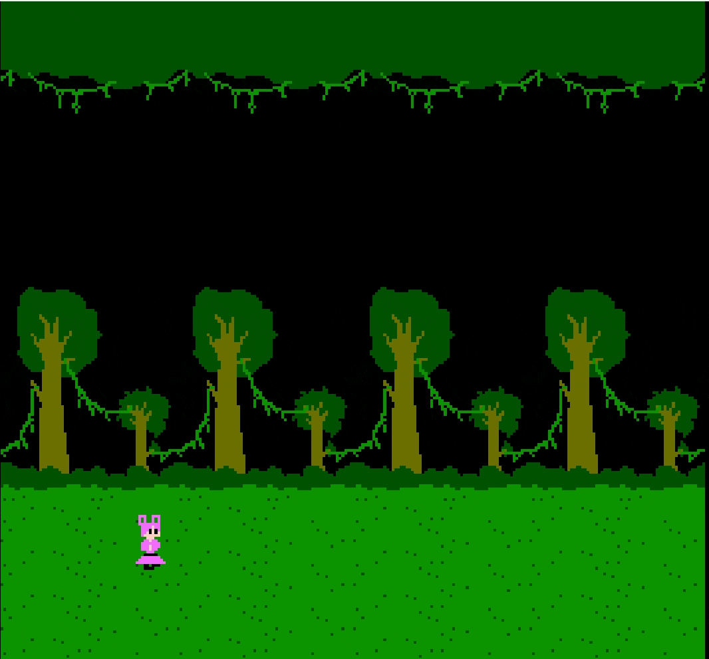
First time i got the floating bubblegum jump working
The game speeds up over time rewarding you more points but making it more difficult to dodge the obstacles and using the bubblegum to float becomes neccesary. If you manage to not run into an obstacle long enough you can actually grab your balloon and get to the winning screen.

How the screen infinitely loops.
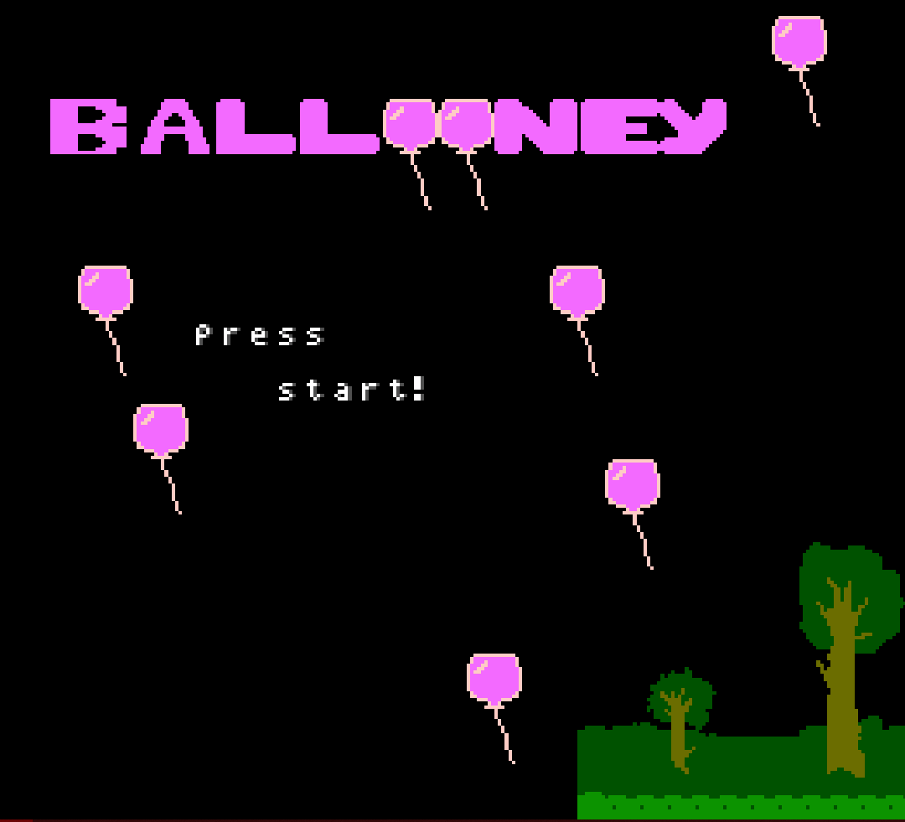
Scrapped title screen that didn't make it into the final game.
The obstacles are randomized, a seed is depicted by the amount of time you spend in the title screen. A newer version of the game (not published) also features music, sound effects and new obstacles. Occasionally red birds will fly in the sky at various heights, making it more difficult for people to time their bubblegum jump.
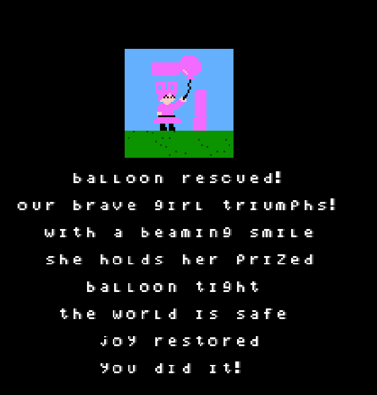
Win screen in latest unpublished version.

Full playtrough of latest unpublished version.
This is not my first NES game i have made, i have made other projects but never published them online. A good example of this is HOUSE, a roleplaying game inspired by games like Earthbound and Undertale. In the game you would explore around your house trying to solve different puzzles to hopefully find a way to leave your house so you can play with your friends outside.
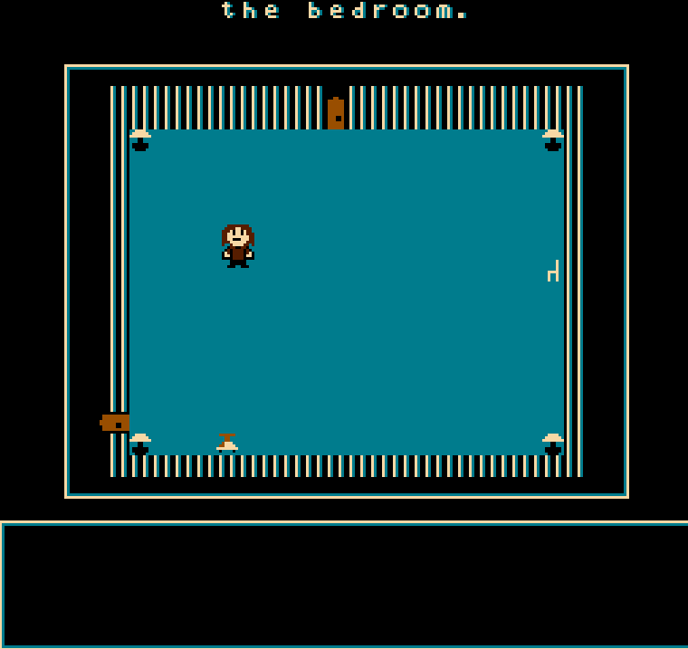
HOUSE in its current unfinished state.
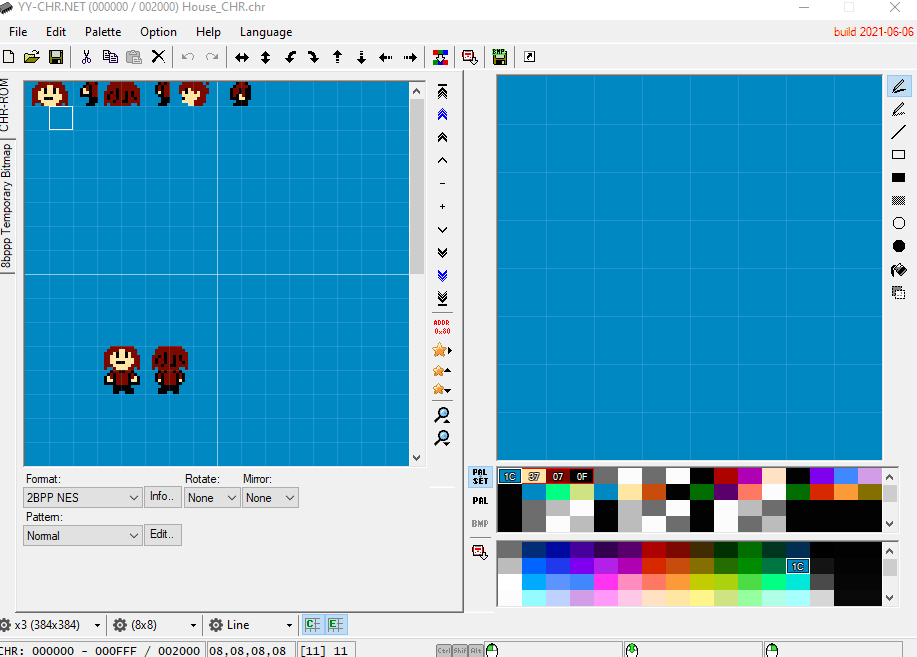
I used YY-CHR.NET to make character sprites and background tiles.
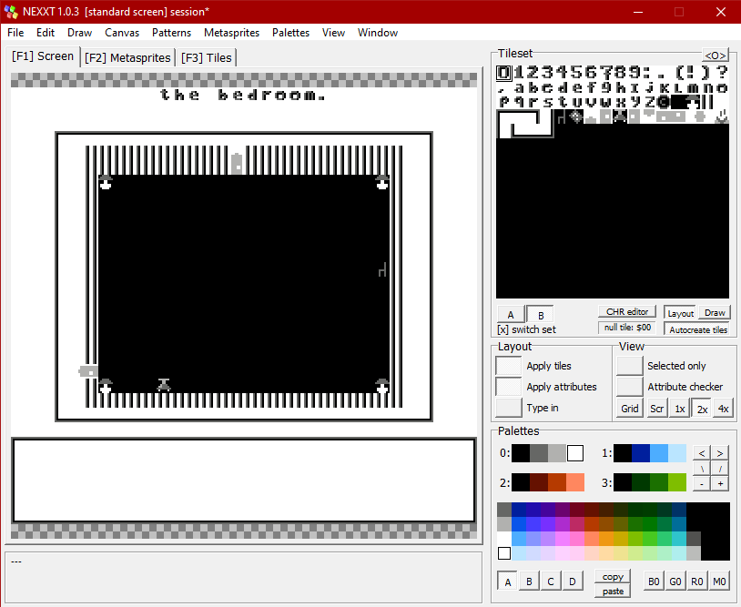
I used NEXXT to make the layout, the bottom part containing the dialogue box is actually not being stored because it's generated during runtime. It's here currently for refference.

The code that is being run behind the scenes, i used notepad++ to code. Feel free to download this .Gif and pause to read the comments.
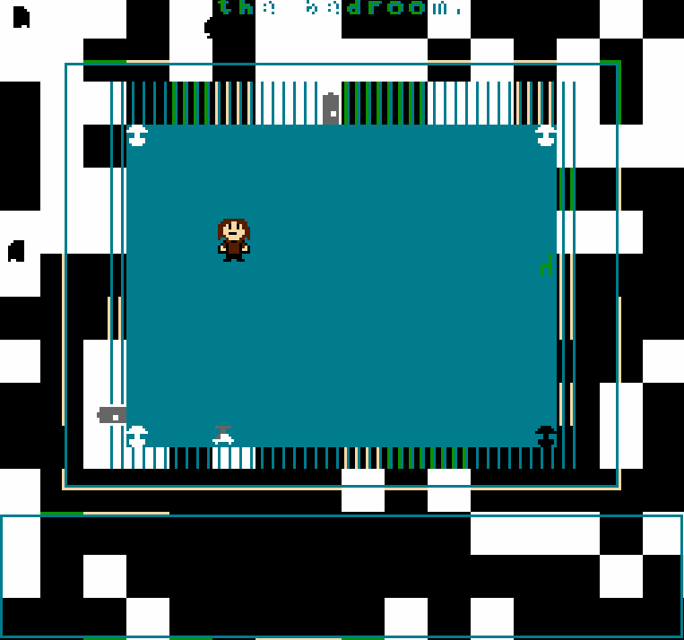
Just a funny bug i once encountered.
Some other small NES games i have made that have never been published:
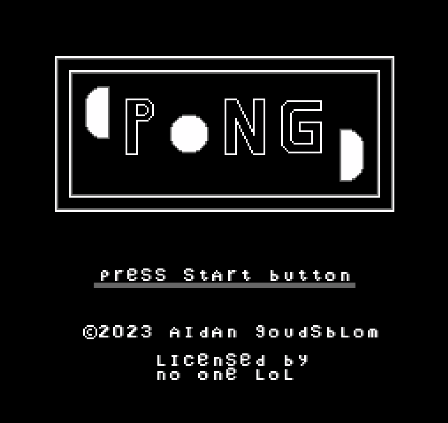
A simple version of pong where you play against a bot.
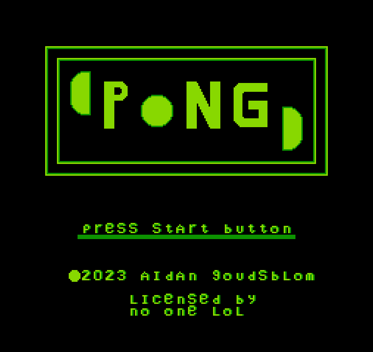
Almost exactly the same as pong but with a slightly altered color palette and instead of playing against a bot you play against your friend. This uses the second controller port of the NES.
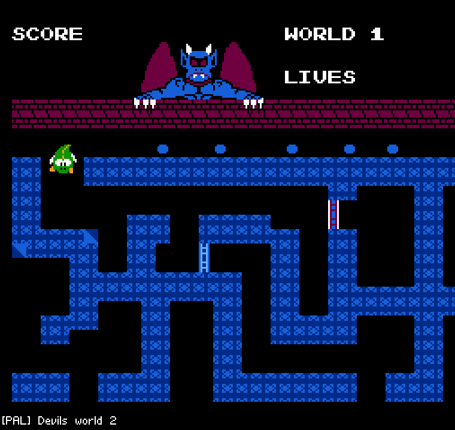
I was working with a friend on making our own sequel for devils world. Sadly production wasn't long and it was quickly scrapped.
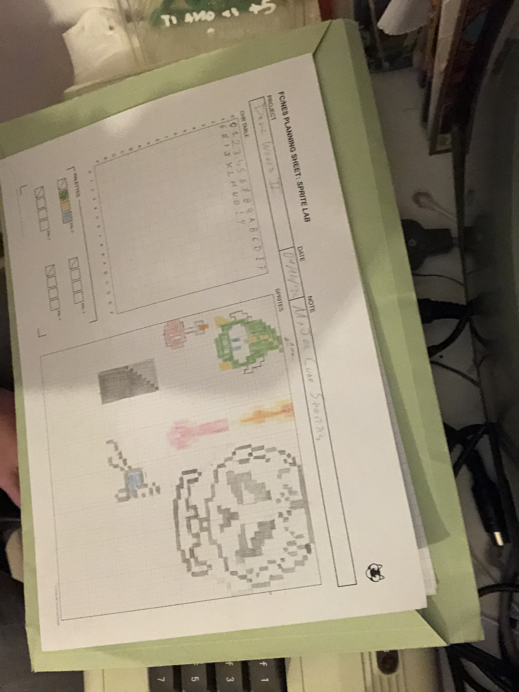
Sprites that my friend drew for the game.
Working on these games and learning how the NES operates and is structured was a lot of fun, i might make another more complicated NES game in the future.
If you want to play the current version of Ballooney you can click here: Ballooney
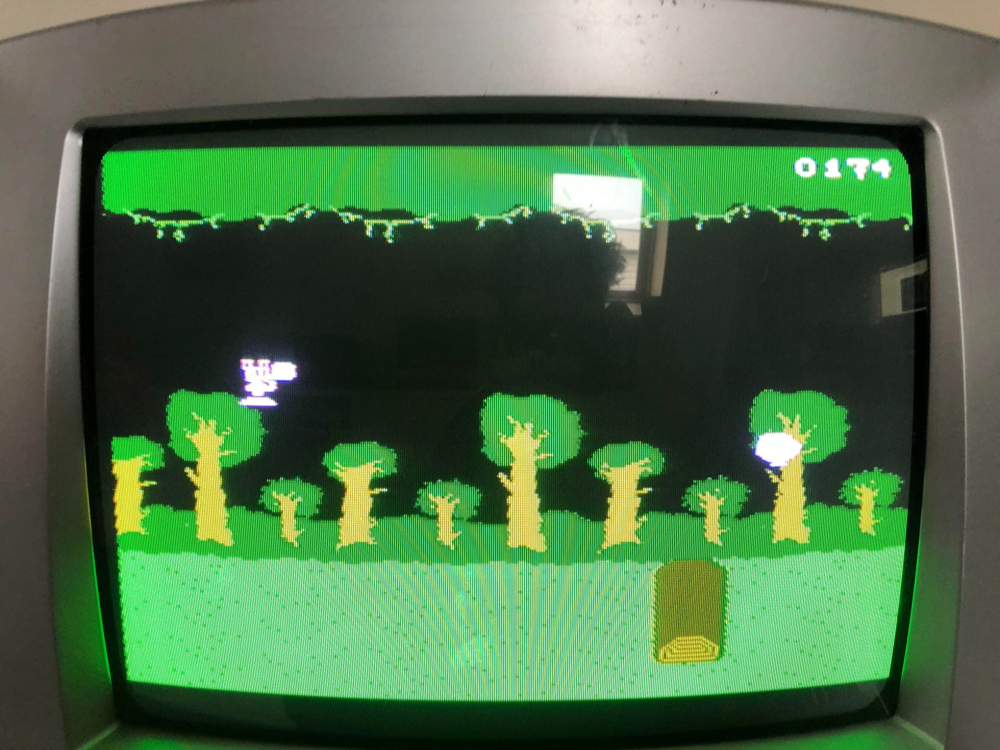
All games shown can be run on the physical NES.